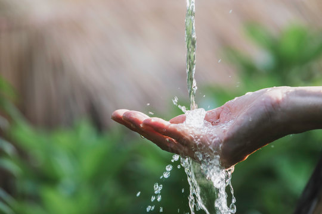

What is this About?
Having clean water and sanitation is crucial for survival. Nowadays, frequent typhoons and floods often lead to water shortages, affecting many people. This situation poses serious health risks due to the spread of waterborne diseases and poor sanitation. Addressing water scarcity and improving sanitation is essential for the well-being and resilience of affected communities.
Investing in sustainable water management and disaster preparedness can mitigate the impact of these natural disasters. This includes building resilient infrastructure and promoting efficient water use.
